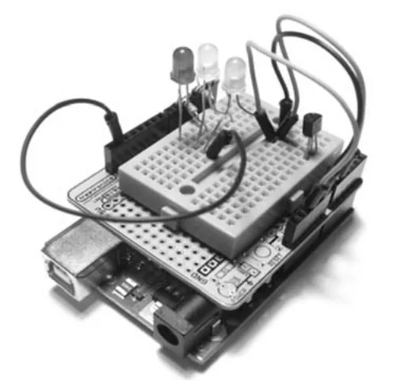
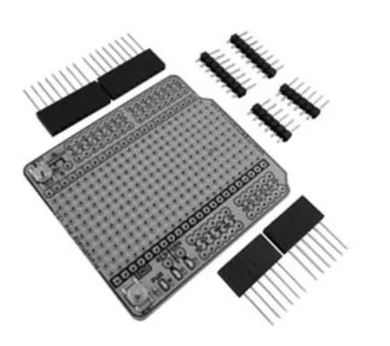

You can buy a variety of shields online (at http://www.shieldlist.org/, for example) or make your own using a ProtoShield. ProtoShields come pre assembled or in kit form, similar to the one shown in Figure 8-5.
A ProtoShield also makes a good base for a solderless breadboard, because it keeps a small circuit within the physical boundary of your Arduino creation (as with the quick-read thermometer shown in Figure 8-6). Smaller solderless breadboards fit within the rows of sockets can be attached to the circuit board with Blu-Tack reusable putty for temporary mounting or double-sided tape for more permanent use. ProtoShields can also act as a more permanent foundation for circuits that have been tested on a breadboard.


Building custom circuits on a ProtoShield requires strategic and special planning. This includes designing the circuit, making a schematic, and then planning the layout of the components as they will sit in the ProtoShield. Finally, the completed circuit for your custom shield will be soldered into place, but you should always test it first using a solderless breadboard to ensure that it works. Some ProtoShields come with a PDF schematic file that you can download and print, intended specifically for drawing your project schematic.